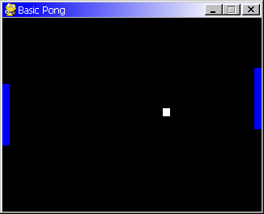

Pygame 利用ノート¶
Note
関連リンクおよび参考サイト¶
- Pygame
Pygame ウェブサイト。リリースニュース、ダウンロード、ドキュメントへの各リンクを提供している。
関連ノート¶
- NumPy 利用ノート
Pygame の一部機能が Numpy を利用している。
インストール¶
事実上 Windows 環境では msi 実行による手段に限られる。 Pygame のサイトのダウンロードのページから最新の msi ファイルをダウンロードして、実行するだけでよい。
Python 3.x 系や 64 ビット環境の場合は公式サイトではなく、 Python Extension Packages for Windows - Christoph Gohlke を利用させてもらう。
テスト¶
コンソールから次のようにタイプすると、テストを実行することになっている。
bash$ python34 -m pygame.tests
別のウィンドウがパカパカ開いたり閉じたりするが、根気よく待つ。すると、いつもの単体テストの結果らしきテキストがコンソールウィンドウに出力される。
skipping pygame.tests._movie_test (tag 'subprocess_ignore')
skipping pygame.tests.cdrom_test (tag 'interactive')
skipping pygame.tests.midi_test (tag 'interactive')
loading pygame.tests.base_test
loading pygame.tests.blit_test
loading pygame.tests.bufferproxy_test
... 略 ...
... ドットが出てくる ...
----------------------------------------------------------------------
Ran 678 tests in 112.678s
FAILED (failures=2, errors=1)
ドキュメント¶
$PYTHONHOME/site-packages/pygame/docs/index.html から読み進めてゆけばよい。
Readme には本パッケージの概要が記されている。
<Pygame requires the Python language and SDL multimedia library> (About): SDL とは何だ？
<Best of all the examples directory has many playable small programs which can get started playing with the code right away> (Help):
import Numericと書いてあるものに関しては直ちに動作しない。
Install のページはもう読まなくてよい。
Tutorials をまずはじっくり読み進めるのがよかろう。
Introduction to Pygame: 紙風船がウィンドウ内をバウンドし続けるプログラムを紹介している。自分でコードを実行してみるとよい。
Chimp Tutorial, Line by Line: ミニウィンドウ内を往復するチンパンジーを殴るゲーム（クソゲー）のプログラミングチュートリアル。 Pygame のプログラムの骨格や、スプライトオブジェクトの定義方法等を習得できる。 HTML に書かれているコードと、インストールされている
chimp.pyのコードとは若干異なるので注意。Surfarray Introduction: ここが現在の疑問点。Numeric とは Numpy の前身か。
Making Games Tutorial
記事内のリンクが切れまくっている。
最初のチュートリアルは “Hello There” というテキストを描画するだけ。これは特に問題ない。
次はテニスゲームの実装チュートリアル。
ball.pngとbat.pngを自分で用意する必要があるようだが、実際にコードを作ってみると、ゲーム博物館に展示されていそうな古い画面が出た。 一部コードを修正しないと動作しなかったと思うが、実行時にすぐに気付くし、修正も容易だったと記憶しているのでここには記さない。
#self.offcourt()の部分を自分なりに実装するとよい。
Reference は Pygame 各 API の説明。
PyOpenGL との連携¶
$PYTHONHOME/site-packages/pygame/examples/glcube.py を見れば理解できる。
GLUT ベースのプログラムでは
glutDisplayFuncで描画コールバックを設定するところを、Pygame ベースのプログラムではイベントループの内部から再描画する。pygame.display.set_modeの引数を OpenGL 対応にするべく、それ用の値を OR する。フレームバッファの入れ替え
glutSwapBuffersはpygame.display.flipに相当するようだ。
Warning
テキスト描画できると思ったらできないので、調査意欲が失せた。

{kind=link}